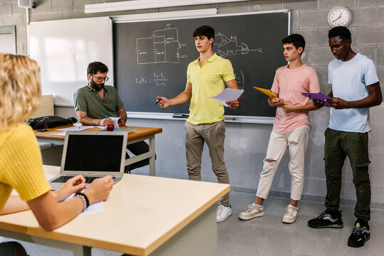

Learning Strategies for Quality Education
Section 1: Active Learning
Setting: Create an engaging environment where students actively participate in the learning process.
- Discussions and Debates: Facilitate classroom discussions and debates to foster critical thinking and active engagement.
- Problem-Solving Activities: Incorporate real-world problems and case studies to encourage practical application of theoretical knowledge.
- Interactive Tools: Utilize tools such as quizzes, polls, and interactive simulations to maintain student interest and participation.
Section 2: Collaborative Learning
Overview: Promote group work and peer-to-peer interaction to enhance understanding and retention.
- Group Projects: Assign projects that require teamwork, collaboration, and communication among students.
- Peer Review: Implement peer review sessions where students provide constructive feedback on each other's work.
- Study Groups: Encourage the formation of study groups to facilitate knowledge sharing and collaborative learning.
Section 3: Technology in Education

Integration: Utilize digital tools and resources to support and enhance the learning experience.
- Learning Management Systems (LMS): Use platforms like Moodle or Blackboard for course management, resource sharing, and assessment.
- Educational Apps and Software: Integrate apps and software such as Kahoot!, Quizlet, and Google Classroom to supplement traditional teaching methods.
- Immersive Technologies: Explore the use of virtual reality (VR) and augmented reality (AR) for creating immersive and interactive learning experiences.
Section 4: Personalized Learning
Approach: Tailor educational experiences to meet individual student needs, interests, and learning styles.
- Individualized Learning Plans: Develop customized learning plans based on student assessments, strengths, and areas for improvement.
- Flexible Learning Paths: Offer multiple pathways for students to achieve learning objectives, accommodating different paces and styles of learning.
- Self-Directed Learning: Provide resources and support for students to take charge of their own learning, fostering independence and self-motivation.
Section 5: Project-Based Learning
Focus: Emphasize hands-on projects that allow students to apply their knowledge in practical, real-world scenarios.
- Real-World Challenges: Design projects that address real-world problems and align with industry standards and practices.
- Project Presentations: Encourage students to present their projects to peers and instructors, promoting communication skills and confidence.
- Assessment Criteria: Evaluate projects based on creativity, application of knowledge, problem-solving abilities, and overall impact.